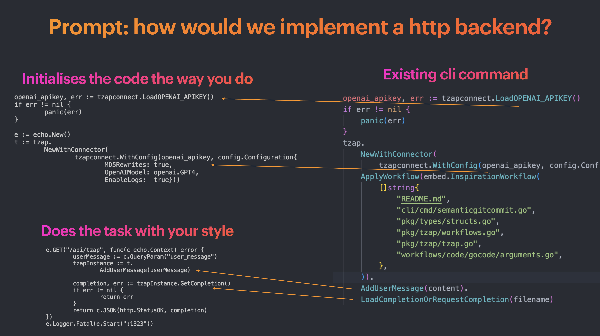

Demo

Comparison of completion and existing code
{kind=link}
What is Tzap?
Tzap is an easy-to-use CLI tool designed to streamline GPT-based code generation tasks. It works by indexing your project (using embeddings and built-in vector database) and extracting relevant contextual information, such as interfaces, types, database models, and more.
When you run the tzap prompt command, Tzap combines your prompt with the extracted context and generates a suitable prompt for the GPT model. This allows GPT to generate both very complex and highly specific code.
Key Features
Tzap is designed to be a tool that significantly improves outcomes, reduce copy pasting, and time spent prompting and can be used in a variety of ways. Here are some of the key features:
-
Targeted refactor
Scenario: There is a function Update() that is over 200 lines that calls on many other functions. There are many code smells and there is no encapsulation. Prompt: "In Update() there is a model_ELS flag that is depended on by on a.js and b.js, refactor to remove this dependency" - Feature building
Scenario: Some ideas exists on new functionality but solutions have not yet been explored Prompt: "How would we implement a new paid subscription model using stripe in our graphql backend?" - Analysis & Documentation
Scenario: When there are many abstractions, files and a lack of documentation Solution: "How does our backend handle signups using oauth and specifically what happens when the user has several emails?"
Community
Join our Discord community to get help, discuss features, and share your projects.
Contributions are welcome! Check out our github repo:
GitHubQuick Install (Node - NPX)
# Add env variable or .env file with your OpenAI API key
# .env file can be added with containing only: OPENAI_APIKEY=<apikey>
export OPENAI_APIKEY=<apikey>
npx tzap init
npx tzap prompt "your prompt"How It Works
Tzap works in the following steps:
- Init: Initializing a project is done with
tzap init. In order to limit costs, Tzap requires a specification of both what to ignore and include..gitignoreand.tzapignoreis FIRST applied and removes all file matches. THEN.tzapincludefurther filters out all NON-MATCHES. - Indexing: When you run
tzap prompt, Tzap builds a cache, indexes your project directory, and builds a vector database of your code files. This allows Tzap to efficiently search for relevant code snippets during the code generation process. Note: This process uploads all file matches to OpenAI. - Prompt Generation: Tzap takes the prompt string that describes the code you want to generate. Tzap combines your prompt with the extracted context information to build a specific prompt for the GPT model.
- Code Generation: Tzap sends the generated prompt to the GPT model, which produces code suggestions based on the provided context and the prompt. These suggestions are then presented to you for further evaluation and integration into your codebase.
By automating code generation tasks and leveraging GPT's language capabilities, Tzap simplifies the process of writing code and helps you push features that are consistent code styles within your project.
Tips for Using Tzap
The typical use case for tzap prompt is when:
- There is some existing code (does not have to be related code to the prompt, like existing datamodels or endpoints)
- There is some idea of a starting point (How do I create an endpoint)
- There is some idea of the goal (that enables customers to change subscription)
Example: Run tzap prompt "How do I create an endpoint that enables customers to change subscription" based on the prompt. GPT might provide a general non-code answer. In such case, instruct it with feedback.
Getting Started
To get started with Tzap, you can choose one of the following installation methods:- Global installation via npm:
`npm install -g tzap` - Use npx:
`npx tzap` - Run the installation script:
`curl -sSL https://tzap.io/install.sh | bash - Download binaries from the latest release
With Tzap up and running, you can begin using it by simply typing
`tzap` in your terminal.
Tzap Embedding Prompt CLI
The tzap prompt command allows you to generate code or content based on embedding search from your existing code. This enables GPT to incorporate your code knowledge and provide more relevant and accurate outputs. By providing additional context, GPT can generate even more accurate code snippets or content based on the provided files.
Use the tzap prompt command with the following syntax:
tzap prompt "<prompt>" [--inspiration=filepath1,filepath2,...] [-s searchQuery] [-f promptFile]Pricing
Tzap is open source and does not charge anything. However, Tzap requires access to OpenAIs api which incurs costs.
Using embeddings and external APIs comes with certain costs. Here's a breakdown of those costs:
Embeddings
- Initialization of embeddings: $0.04 (Run once). (200 files, 6,500 lines of code)
- Re-fetch when generating with new code changes: $0.0004 per 1,000 "words/tokens"
GPT Model
- You can choose to use GPT-4 or GPT-3.5 (GPT-3.5 is default usually).
- The maximum cost per file for GPT-4 is $0.1 (8,000 "word/token" limit).
- The maximum cost per file for GPT-3.5 is $0.008 (4,000 "word/token" limit).